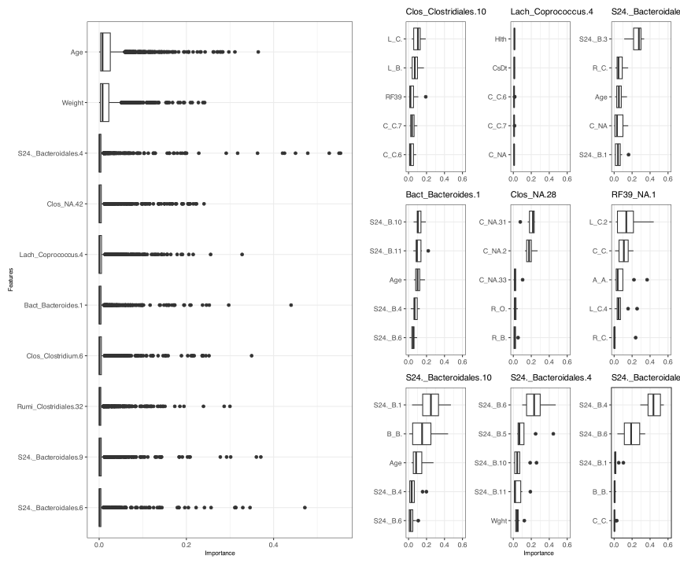
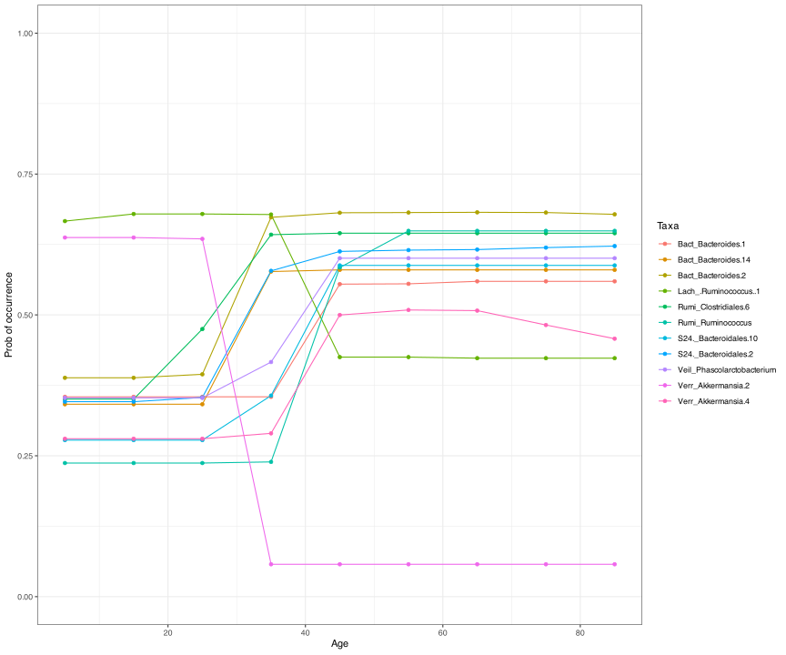
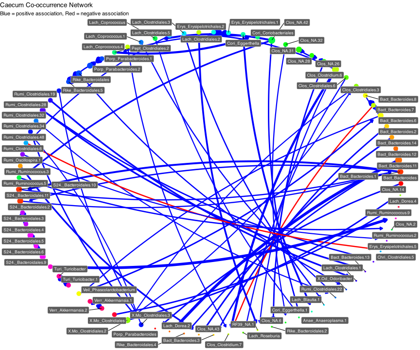
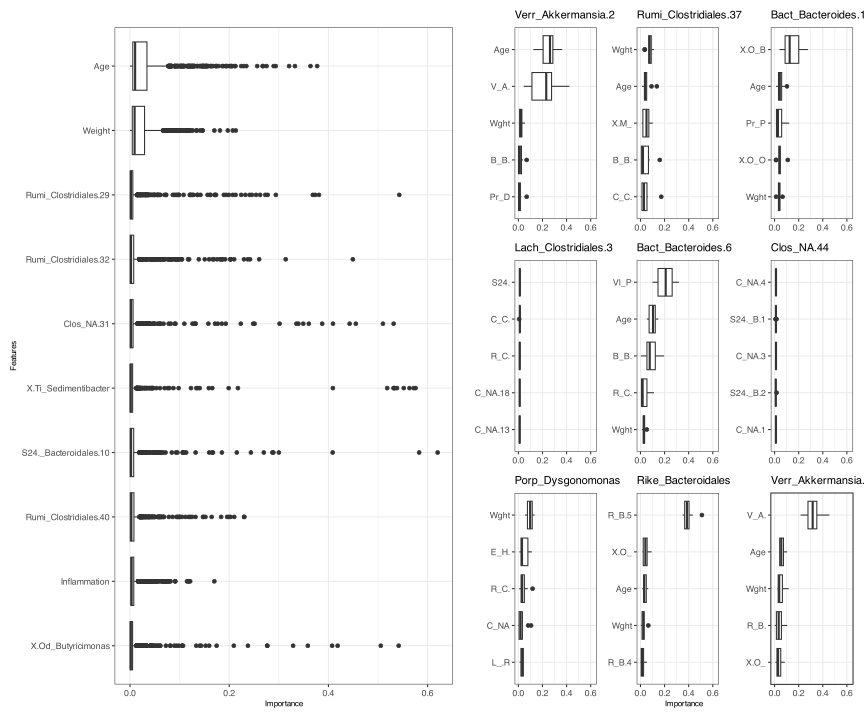
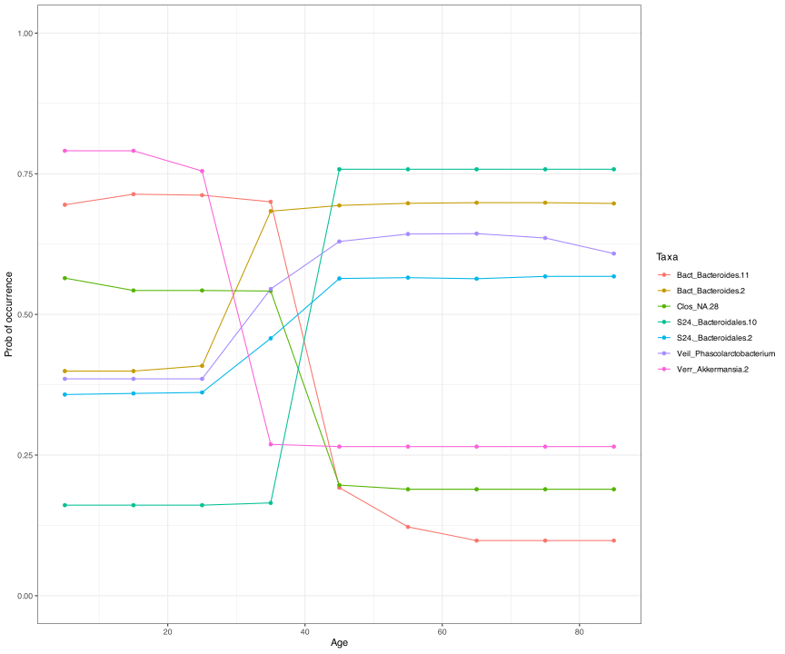
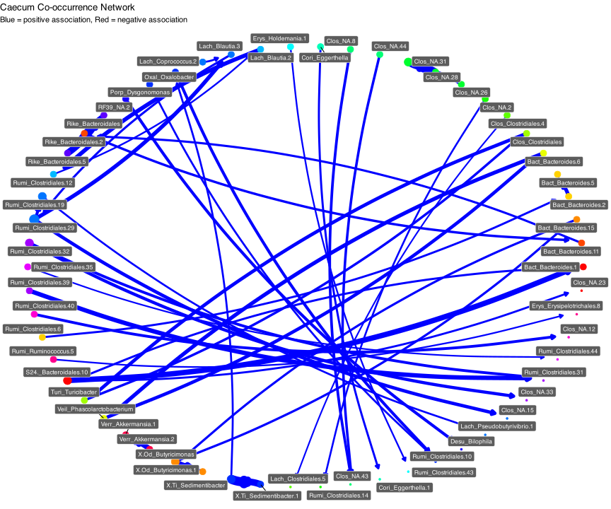
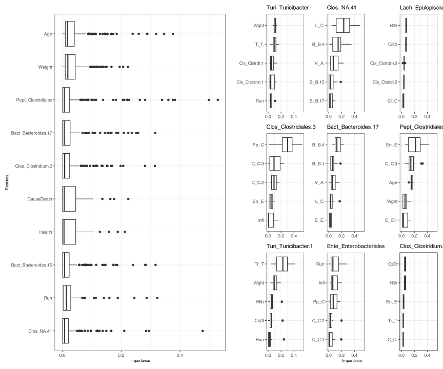
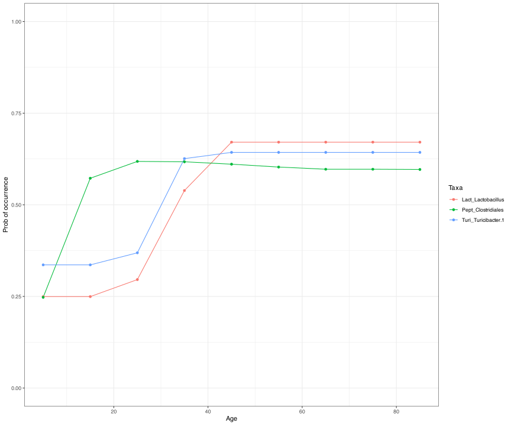
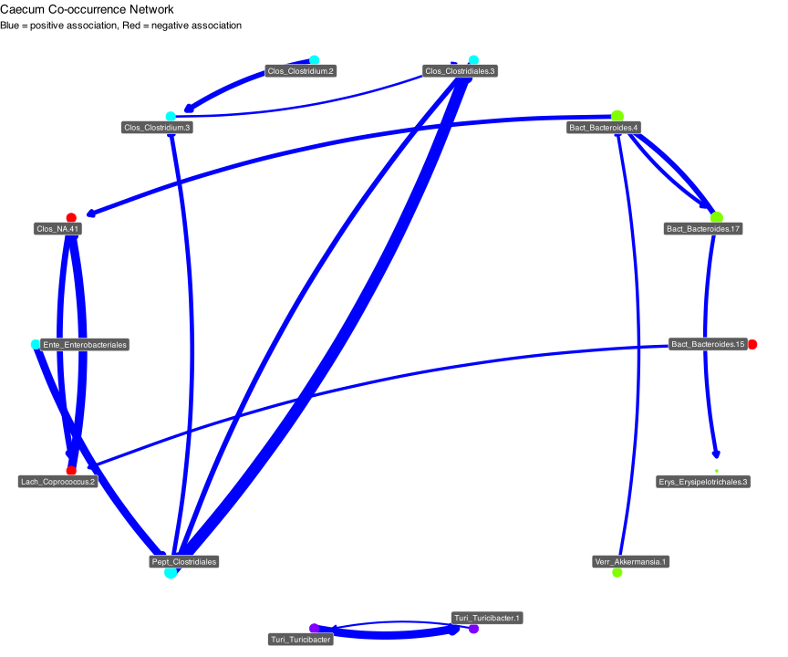

# Load required packages
# Data manipulation
library(here)
library(readxl)
library(tidyverse)
library(DT)
# Modeling
library(mrIML)
library(tidymodels)
library(future)
library(finetune)
library(flashlight)
# Plotting
library(igraph)
library(ggnetwork)
library(cowplot)
library(patchwork)
# Load custom functions
source(here("R-functions", "select_variables.r"))
source(here("R-functions", "plot_network.r"))
# Set up parallel processing
n_cores <- parallel::detectCores()
plan("multicore", workers = n_cores - 2)
# Prepare data using script. Reads in the .tsv data and prepares for analysis.
# Result is Y (response), X1 (co-occurance), and X (predictors) data frames for
# _caecum, _colon, and _Ileum.
source(
here("case-studies", "03-ostrich-microbiome", "ostrich_data_curation.r")
)4 Ostrich gut microbiome
4.1 Define tidymodel
model_rf <- rand_forest(
trees = 1000,
mode = "classification",
mtry = tune(),
min_n = tune()
) %>%
set_engine("randomForest")4.2 Caecum
4.2.1 Model fitting
X1_caecum <- Y_caecumF
X_caecum <- X_caecum
Y_caecum <- Y_caecumF
yhats_rf_caecum_combined <- mrIMLpredicts(
X = X_caecum,
Y = Y_caecum,
X1 = X1_caecum,
Model = model_rf,
balance_data = 'no',
tune_grid_size = 5,
prop = 0.7,
k = 5,
racing = F
)
yhats_rf_caecum_noX1 <- mrIMLpredicts(
X = X_caecum,
Y = Y_caecum,
#X1=X1,
Model = model_rf,
balance_data = 'no',
tune_grid_size = 5,
prop = 0.6,
k = 5,
racing = F
)
yhats_rf_caecum_noX <- mrIMLpredicts(
X = NULL,
Y = Y_caecum,
X1 = X1_caecum,
Model = model_rf,
balance_data = 'no',
tune_grid_size = 5,
prop = 0.6,
k = 5,
racing = F
)4.2.2 Performance
model_perf_caecum_combined <- mrIMLperformance(yhats_rf_caecum_combined)Warning: NAs produced when calculating MCC. This is common when there is a
class imbalance. Substituting NA values with zero.model_perf_caecum_noX1 <- mrIMLperformance(yhats_rf_caecum_noX1)Warning: NAs produced when calculating MCC. This is common when there is a
class imbalance. Substituting NA values with zero.model_perf_caecum_noX <- mrIMLperformance(yhats_rf_caecum_noX)Warning: NAs produced when calculating MCC. This is common when there is a
class imbalance. Substituting NA values with zero.data.frame(
Model = c("Host characteristics", "Co-occurrence only", "Combined"),
MCC = c(
model_perf_caecum_combined[[2]],
model_perf_caecum_noX1[[2]],
model_perf_caecum_noX[[2]]
)
) Model MCC
1 Host characteristics 0.5076450
2 Co-occurrence only 0.3980356
3 Combined 0.4981362# Need to increase memory allowance for workers.
options(future.globals.maxSize = 10 * 1024^3)
bootstrap_caecum_combined <- mrBootstrap(
yhats_rf_caecum_combined,
num_bootstrap = 10
)
vip_caecum_combined <- mrVip(
yhats_rf_caecum_combined,
bootstrap_caecum_combined
)Warning: NAs produced when calculating MCC. This is common when there is a
class imbalance. Substituting NA values with zero.vip_caecum_combined[[3]]
profilePlot_pd_caecum <- mrCovar(
yhats_rf_caecum_combined,
var = "Age",
sdthresh = 0.1
)
profilePlot_pd_caecum[[1]]
4.2.3 Co-occurance network
assoc_net_caecum <- mrCoOccurNet(bootstrap_caecum_combined)
plot_network(
assoc_net_caecum,
strength_threash = 0.1,
network_title = "Caecum Co-occurrence Network",
nmds_layout = TRUE,
degree = TRUE,
group_colours = TRUE
)
4.3 Colon
X1_colon <- Y_colonF
X_colon <- X_colon
Y_colon <- Y_colonF
yhats_rf_colon_combined <- mrIMLpredicts(
X = X_colon,
Y = Y_colon,
X1 = X1_colon,
Model = model_rf,
balance_data = 'no',
tune_grid_size = 5,
prop = 0.7,
k = 5,
racing = F
)
yhats_rf_colon_noX1 <- mrIMLpredicts(
X = X_colon,
Y = Y_colon,
#X1=X1,
Model = model_rf,
balance_data = 'no',
tune_grid_size = 5,
prop = 0.6,
k = 5,
racing = F
)
yhats_rf_colon_noX <- mrIMLpredicts(
X = NULL,
Y = Y_colon,
X1 = X1_colon,
Model = model_rf,
balance_data = 'no',
tune_grid_size = 5,
prop = 0.6,
k = 5,
racing = F
)model_perf_colon_combined <- mrIMLperformance(yhats_rf_colon_combined)Warning: NAs produced when calculating MCC. This is common when there is a
class imbalance. Substituting NA values with zero.model_perf_colon_noX1 <- mrIMLperformance(yhats_rf_colon_noX1)Warning: NAs produced when calculating MCC. This is common when there is a
class imbalance. Substituting NA values with zero.model_perf_colon_noX <- mrIMLperformance(yhats_rf_colon_noX)Warning: NAs produced when calculating MCC. This is common when there is a
class imbalance. Substituting NA values with zero.data.frame(
Model = c("Host characteristics", "Co-occurrence only", "Combined"),
MCC = c(
model_perf_colon_combined[[2]],
model_perf_colon_noX1[[2]],
model_perf_colon_noX[[2]]
)
) Model MCC
1 Host characteristics 0.5154993
2 Co-occurrence only 0.4121526
3 Combined 0.5195719# Need to increase memory allowance for workers.
options(future.globals.maxSize = 10 * 1024^3)
bootstrap_colon_combined <- mrBootstrap(
yhats_rf_colon_combined,
num_bootstrap = 10
)
vip_colon_combined <- mrVip(
yhats_rf_colon_combined,
bootstrap_colon_combined
)Warning: NAs produced when calculating MCC. This is common when there is a
class imbalance. Substituting NA values with zero.vip_colon_combined[[3]]
profilePlot_pd_colon <- mrCovar(
yhats_rf_colon_combined,
var = "Age",
sdthresh = 0.1
)
profilePlot_pd_colon[[1]]
assoc_net_colon <- mrCoOccurNet(bootstrap_colon_combined)
plot_network(
assoc_net_colon,
strength_threash = 0.1,
network_title = "Caecum Co-occurrence Network",
nmds_layout = TRUE,
degree = TRUE,
group_colours = TRUE
)
4.4 Ileum
X1_ileum <- Y_ileumF
X_ileum <- X_ileum
Y_ileum <- Y_ileumF
yhats_rf_ileum_combined <- mrIMLpredicts(
X = X_ileum,
Y = Y_ileum,
X1 = X1_ileum,
Model = model_rf,
balance_data = 'no',
tune_grid_size = 5,
prop = 0.7,
k = 5,
racing = F
)
yhats_rf_ileum_noX1 <- mrIMLpredicts(
X = X_ileum,
Y = Y_ileum,
#X1=X1,
Model = model_rf,
balance_data = 'no',
tune_grid_size = 5,
prop = 0.6,
k = 5,
racing = F
)
yhats_rf_ileum_noX <- mrIMLpredicts(
X = NULL,
Y = Y_ileum,
X1 = X1_ileum,
Model = model_rf,
balance_data = 'no',
tune_grid_size = 5,
prop = 0.6,
k = 5,
racing = F
)model_perf_ileum_combined <- mrIMLperformance(yhats_rf_ileum_combined)Warning: NAs produced when calculating MCC. This is common when there is a
class imbalance. Substituting NA values with zero.model_perf_ileum_noX1 <- mrIMLperformance(yhats_rf_ileum_noX1)Warning: NAs produced when calculating MCC. This is common when there is a
class imbalance. Substituting NA values with zero.model_perf_ileum_noX <- mrIMLperformance(yhats_rf_ileum_noX)Warning: NAs produced when calculating MCC. This is common when there is a
class imbalance. Substituting NA values with zero.data.frame(
Model = c("Host characteristics", "Co-occurrence only", "Combined"),
MCC = c(
model_perf_ileum_combined[[2]],
model_perf_ileum_noX1[[2]],
model_perf_ileum_noX[[2]]
)
) Model MCC
1 Host characteristics 0.3168804
2 Co-occurrence only 0.2903949
3 Combined 0.3133663# Need to increase memory allowance for workers.
options(future.globals.maxSize = 10 * 1024^3)
bootstrap_ileum_combined <- mrBootstrap(
yhats_rf_ileum_combined,
num_bootstrap = 10
)
vip_ileum_combined <- mrVip(
yhats_rf_ileum_combined,
bootstrap_ileum_combined
)Warning: NAs produced when calculating MCC. This is common when there is a
class imbalance. Substituting NA values with zero.vip_ileum_combined
profilePlot_pd_ileum <- mrCovar(
yhats_rf_ileum_combined,
var = "Age",
sdthresh = 0.1
)
profilePlot_pd_ileum[[1]]
assoc_net_ileum <- mrCoOccurNet(bootstrap_ileum_combined)
plot_network(
assoc_net_ileum,
strength_threash = 0.1,
network_title = "Caecum Co-occurrence Network",
nmds_layout = TRUE,
degree = TRUE,
group_colours = TRUE
)